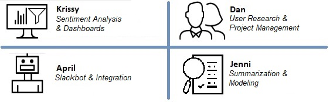

Lysten was conceived as a final project for the w210 capstone course of the UC Berkeley MIDS program, as a tool to enable conversation between students and professors during the course of the semester, trimester, or quarter.
The name “Lysten” is a play on “Listen”, which is what we hope to be able to do for both students and professors - providing a empathetic ear for students’ feedback, and serving up key insights from that feedback for professors. Lys means “light” in Danish, and represents both education (via a lightbulb) and our goal of illuminating specific, helpful insights. “Lys” also plays on the “analysis” that the product performs on the students' feedback.
Virtual classrooms pose a unique social problem: It is critical to collect constant feedback to ensure the course design and materials are at their best. However, students and professors don’t have the same kind of relationship that face-to-face physical classes can foster. This lack of personal relationship can make the feedback loop difficult to facilitate.
Students are often given only limited options to provide formal feedback (in the form of mid- and end-term surveys). Even this small amount of data can be difficult to manage, without a way to automatically pull out patterns from the feedback. Many Professors in online programs have roles in industry, and don't have the time to spend on fully manual review.
Lysten offers a solution:
a system by which students and professors can have an interactive conversation throughout the semester, even when a
physical space isn’t available.
The Lysa chatbot provides a venue for students to air their concerns anytime throughout the semester in a friendly,
informal, and interactive environment.
The Lysten system then uses machine learning and natural language processing to sift through the feedback,
presenting it to instructors and administrators in a clear, concise, and ultimately actionable format.
The result is an enhanced experience for all involved.

Lysa is built to address students’ feedback needs by combining Node.js module Botkit, Express framework and MongoDB that is integrated with Slack.
Raw student feedback is processed through a pipeline built on Python 3 to aggregate, summarize, and analyze it into actionable results. The NLTK package powers text preprocessing and cleaning, the Gensim package powers summarization and LDA modeling, and the scikit-learn package powers the topic classifiers. See the Modeling page for more details.
The professor- and admin-facing dashboards are built using Tableau visualizations. A Student License through UC Berkeley allows access to Tableau Desktop and Tableau Public to deploy to the web.
The Node.js application is hosted on Glitch platform, which can directly accept web requests made by Slack’s Events API and respond to students’ chat messages.
Let us know if you have any questions about our methodology, data, or design!
Krissy Gianforte: krissy@berkeley.edu
Dan Kent: dkent@berkeley.edu
April Kim: mjapkim@berkeley.edu
Jennifer Podracky: jennifer.m.podracky@berkeley.edu

*Note: these dashboards are for demonstration purposes and use manufactured data.*